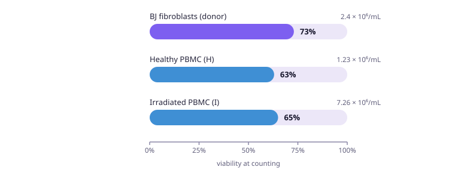
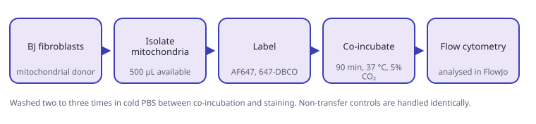
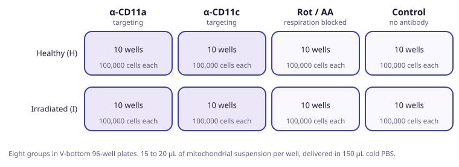

Mitochondria isolated from BJ fibroblasts were delivered to peripheral blood mononuclear cells from a healthy and an irradiated arm, across two targeting antibodies and two controls. The readouts are internalisation, mitochondrial ROS, mitochondrial mass and antioxidant capacity.
Objective
- Quantify how much mitochondrial transfer occurs in healthy against irradiated PBMC.
- Measure the fraction of cells that internalise mitochondria, and what happens to mitochondrial ROS and mass afterwards.
- Establish whether a targeting antibody changes the outcome.
Cells used
- Donor: BJ human foreskin fibroblasts.
- Recipients: PBMC, one healthy arm (H) and one irradiated arm (I), 5 × 106 cells each.
- The same counting session covered further lines belonging to other experiments. Those are not part of this one and are left out here.
| Preparation | Density | Viability | Taken forward |
|---|---|---|---|
| BJ fibroblasts, donor | 2.4 × 106/mL | 73% | 12 to 12.5 × 106 |
| PBMC, healthy (H) | 1.23 × 106/mL | 63% | 5 × 106 |
| PBMC, irradiated (I) | 7.26 × 106/mL | 65% | 5 × 106 |

Method
- Isolate mitochondria from BJ fibroblasts. 500 µL of suspension available across both arms.
- Plate PBMC at 100,000 per well in V-bottom 96-well plates, ten wells per group.
- Add 15 to 20 µL of mitochondrial suspension per well, delivered in 150 µL cold PBS.
- Co-incubate for 90 minutes at 37 °C and 5% CO2.
- Wash two to three times in cold PBS.
- Stain, fix in 2% paraformaldehyde, acquire by flow cytometry, analyse in FlowJo.
- Non-transfer controls are handled identically at every step, including the washes.

Groups
- Each arm receives four conditions: α-CD11a and α-CD11c as targeting antibodies, rotenone with antimycin A as a respiration-blocked control, and a no-antibody control.
- Eight groups in total, ten wells each.

Labels and stains
| Readout | Reagent | Concentration | Time |
|---|---|---|---|
| Internalisation | AF647 (647-DBCO) | — | — |
| Mitochondrial ROS | MitoSOX Red | 5 µM | 30 min, 37 °C |
| Mitochondrial mass | MTV | 50 nM | 30 min, room temperature, after fixing |
| Antioxidant capacity | ThiolTracker Violet | 10 µM | 30 min, 37 °C |
| Antioxidant capacity | GSH detection kit | per kit | 24 and 72 h supernatant |
| Immune subsets | α-CD3, α-CD4, α-CD14, α-CD19, α-CD56 | 25 µg/mL | 20 min |
Endpoints
| Endpoint | Comparison |
|---|---|
| Internalisation, AF647 positive | H against I, and across the four conditions |
| Mitochondrial ROS, MitoSOX median intensity | normalised to mitochondrial mass |
| Mitochondrial mass, MTV median intensity | H against I, with and without transfer |
| Antioxidant capacity, thiols and GSH | with and without transfer |
| Immune subset frequency | H against I |
Status and open points
- Confocal microscopy and cytofluorimeter to run.
- Cells counted and plated. No results recorded yet; the flow cytometry analysis is still to come.
- Culture media and mouse strain were not written down at the time.
- Viability in both PBMC arms is in the sixties, so a weak effect may not separate from the noise.
- Builds on the neutrophil transfer work, where the preparation rather than the cell type turned out to be the limiting factor.
From the bench


Isolation, labelling and transfer runs. Pellets, gradient fractions and the bench they were done on.